Tags, categories, plans, and the audit log
The standard tags, the file categories, every lab's cleanup plans, and the record of every change.
Tags
The standard tags every lab can put on its folders. Each has a label and a key, a description, and a value type: a flag (no value), text (one value, or more than one), a date, or a choice from the site's own list. Applied by says whether lab PIs and delegates apply it, or administrators only (as for Data classification). A tag can protect folders: a flag (Legal hold) or a date (Keep until) keeps them out of cleanup plans.
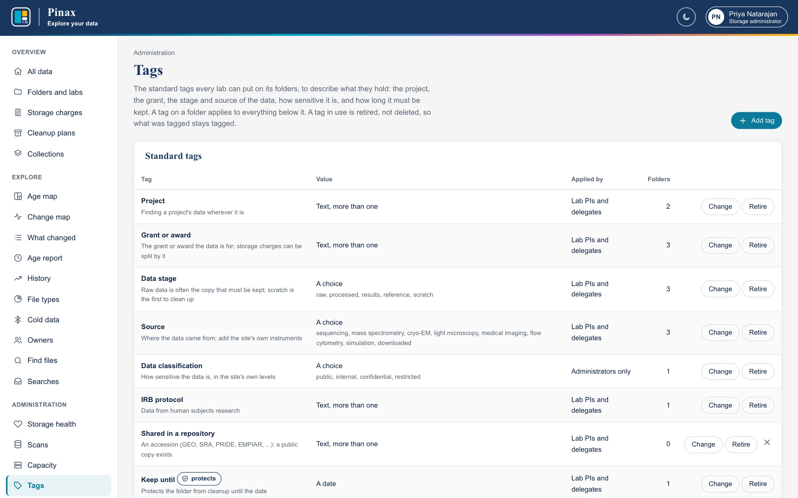
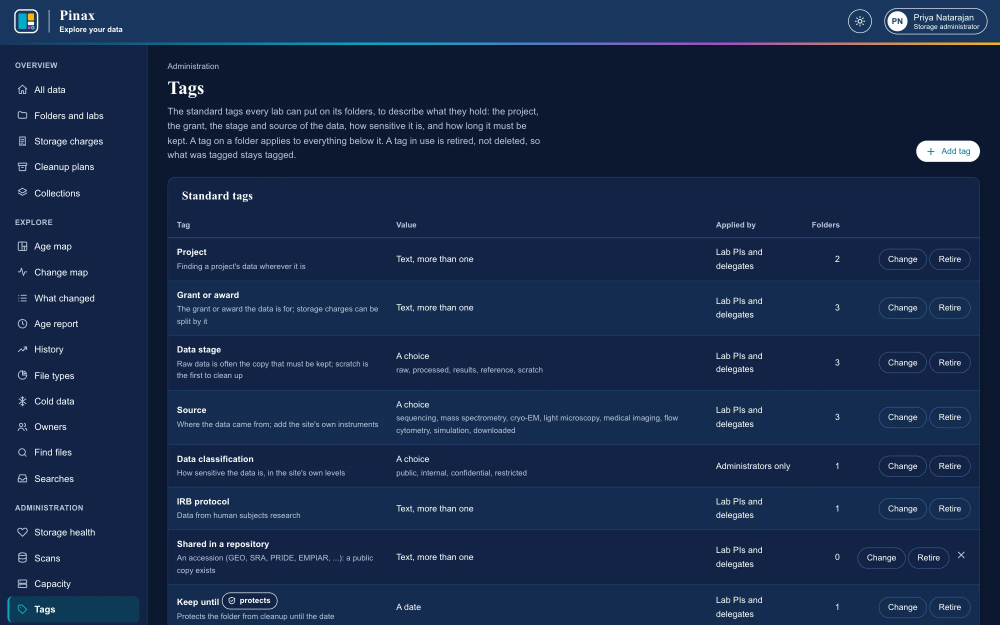
- Add tag adds one; Change edits it (its type cannot change once it is used, and a choice in use cannot be taken away).
- Retire stops a tag from being applied; what was tagged stays tagged, and Bring back undoes it. An unused tag can be deleted (the cross).
- Labs' own tags are listed below the standard ones: labs make them from a folder's panel on the age map.
- Fold into a standard tag, on a lab's tag that folders have, is for a lab's tag that means what a standard one does. Choose the standard tag and, if it takes a value, the value, or keep each folder's own (a flag gives its name, which only text takes). Every folder with the lab's tag gets the standard tag instead, and the lab's tag is retired. Where a folder already has a standard tag that takes one value, the folded value replaces its own. A value the standard tag cannot take (one that is not among a choice's, or not a date) is refused and nothing changes, and a retired standard tag cannot be folded into. The fold is audited.
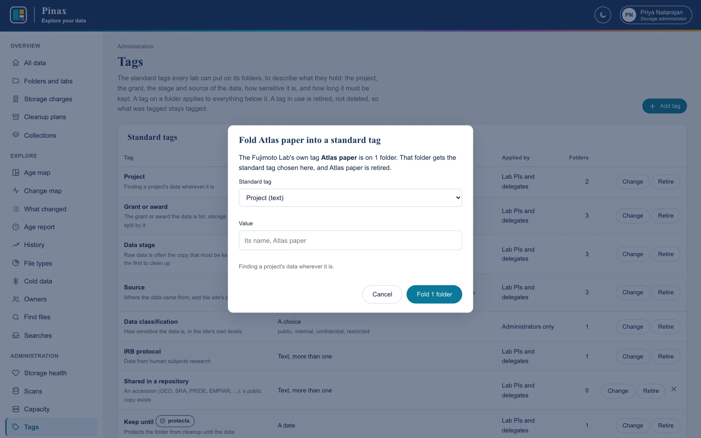
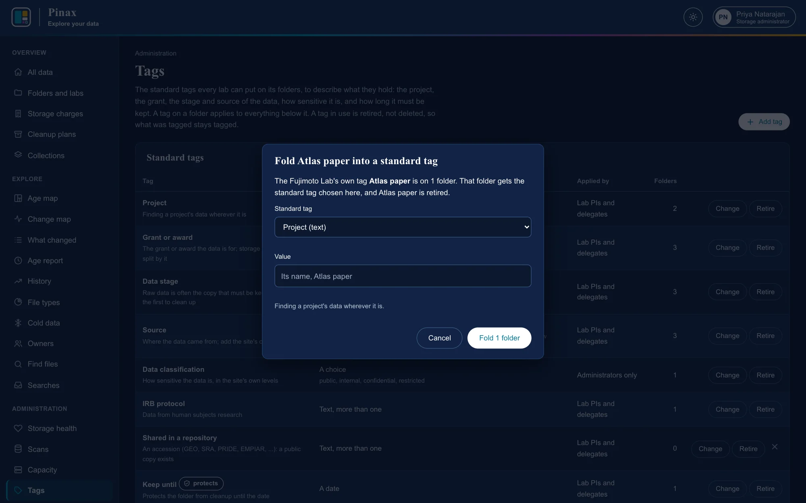
To tag many folders at once, pinax tags import reads a CSV of filesystem, path, tag, and value, with a dry run first (CLI.md).
File categories
What each file counts as on File types, the age map's sizes and colors, and Find files: the twelve built in to start, and a site's own, up to 24. A category lists extensions (a compressed file counts by the one inside, so fastq takes .fastq.gz), and may list patterns on file names: regular expressions, at most 25 in all, checked before any extension, in the order of the list. A file's category is the first whose pattern its name matches, then the one listing its extension, then Other. A pattern matches anywhere in a name unless anchored with ^ and $, and (?i) ignores case, so (?i)^undetermined_ takes the reads a sequencer could not assign to a sample, although fastq is sequencing data's.
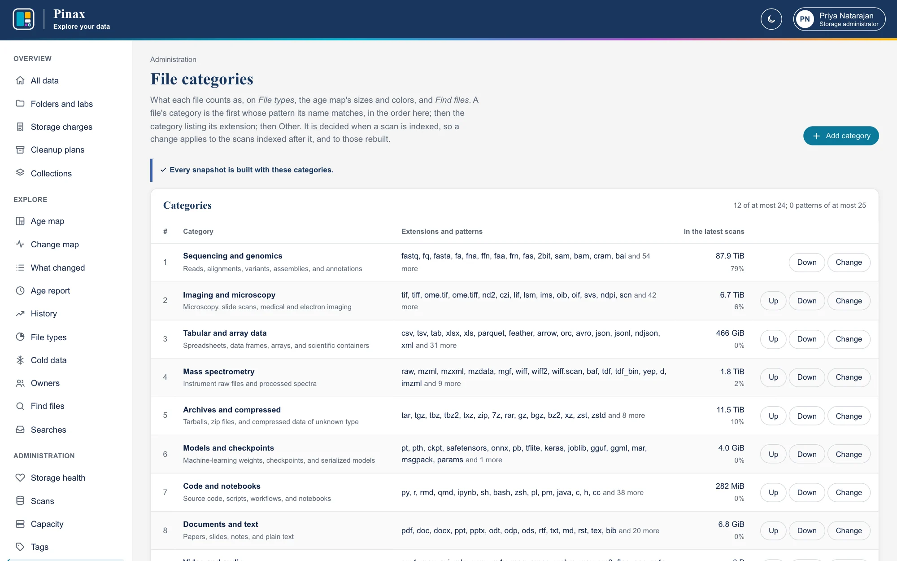
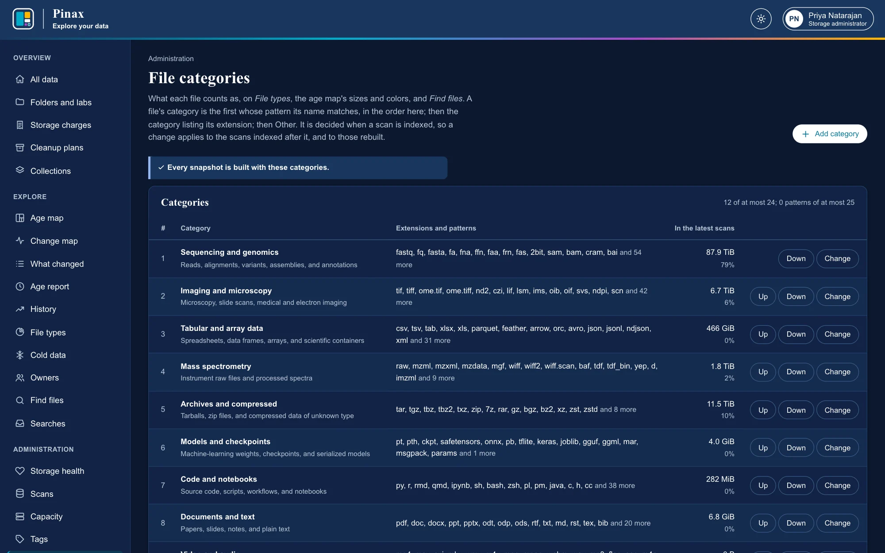
- Add category, and Change on each, open its name, what it holds, its extensions, and its patterns. Try the patterns checks each as DuckDB reads regular expressions (RE2's syntax: no backreferences, so none can take exponential time), and shows which names it matches in a sample of each filesystem's latest scan. What would change shows, before anything is saved, how the latest scans' files would move between categories: by extension exactly, from each scan's table of types, and by name an estimate from a sample of about 50,000 of its files (the first of each part of its index, a spread over its top-level folders, never a read of the whole filesystem); and which snapshots would then be outdated.
- Up and Down change the order: the order patterns are checked in, and, for an extension two categories list, which one takes it. Other stays last, with no extensions or patterns.
- A built-in category can be renamed and its rules changed, but not removed; one the site added can be removed (the cross), and its files then count by their extensions.
- Every change is in the audit log (File categories), with what changed. Auditors see the page without its buttons.
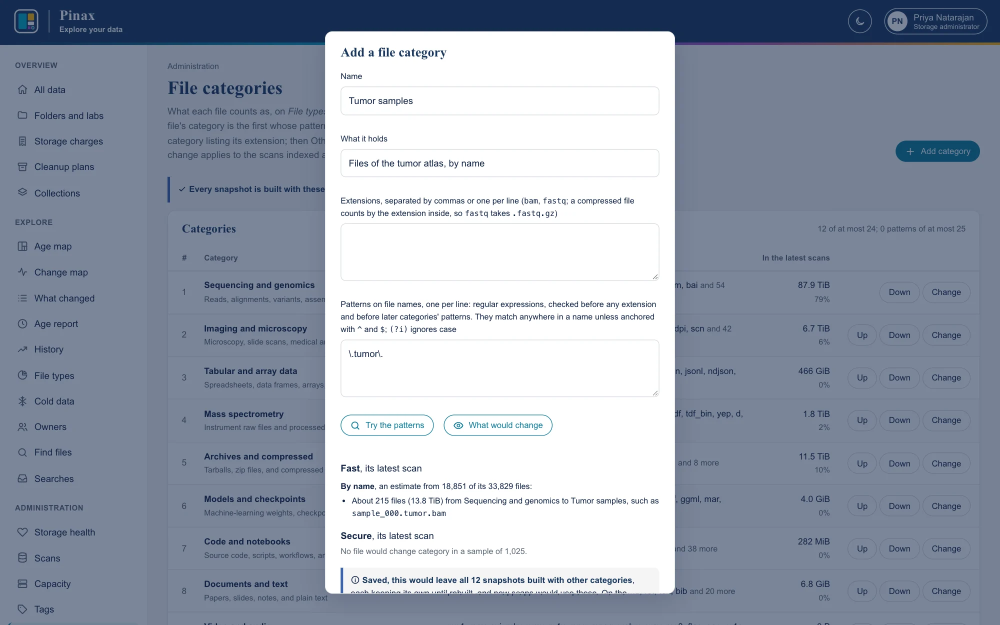
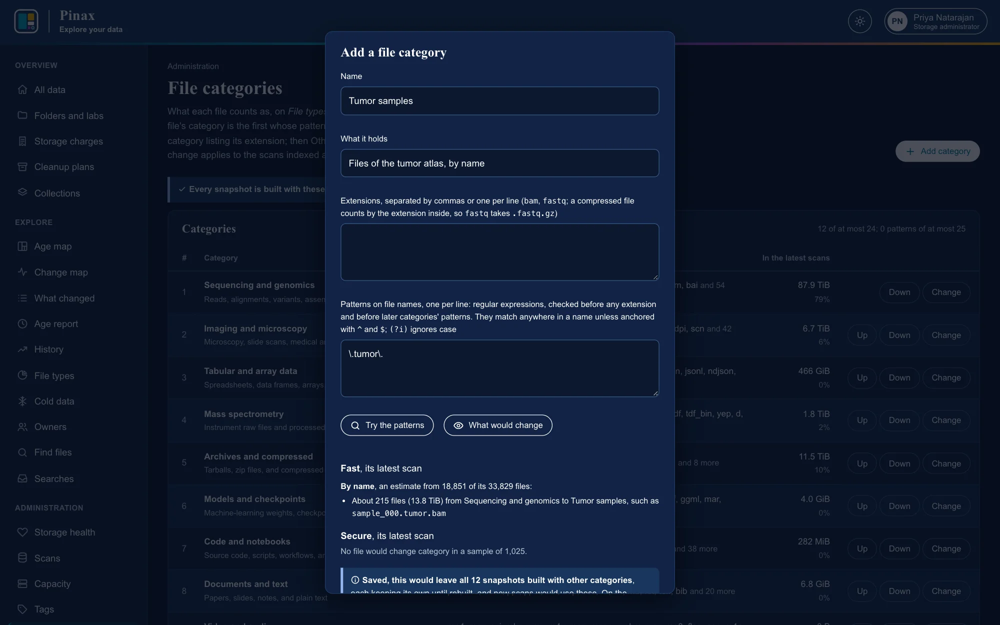
A change applies to the scans indexed after it. A file's category is decided when its scan is indexed, so each snapshot keeps the categories it was built with, and reports read each one's own. The page says how many snapshots were built with other categories, and about how long rebuilding them takes, from their last builds. Rebuilding runs on the server, not from the page: pinax rebuild --outdated rebuilds them all, oldest first, and pinax rebuild --outdated --latest only each filesystem's latest, so the latest scans use the new categories and older ones keep theirs (CLI.md).
Every lab's cleanup plans
An administrator's or auditor's Cleanup plans shows every lab's plan at once: what they would free and save in all, by filesystem, the largest folders planned, and each lab's total, so IT can see what cleanup is coming and what is done.
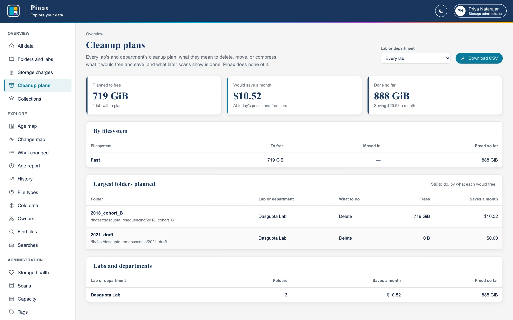
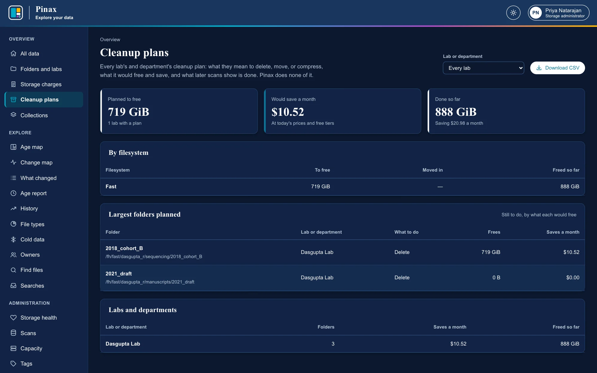
The audit log
Every change made in the app, by import, and from the command line, and every sign-in with local sign-in, is in the audit log: who made it, when, from where, and what changed. Audit log, in the sidebar of administrators and auditors, shows it newest first, 50 changes a page, each with its time, who made it (or Command line with the account that ran it, or Pinax for scans it ingested), the API token it was made with, the address it came from, and what it changed; Details opens what was recorded. Find changes by any of:
- Person: changes they made, and changes made to them (their roles, labs, and tokens).
- Change: one action, such as
plan.added, or every one of a kind, such as every change to cleanup plans. - Lab or department: changes to it, its members, its plan, its own tags, and its folders, and folders given to it or taken from it.
- Folder: changes to a folder and the folders in it, and to who owns the top-level folder it is in (choose its filesystem and give its path within it, such as
dasgupta_r/sequencing); a filesystem alone, every folder on it. - From and To: the days, in UTC.
Download CSV has every change that matches, as recorded, with its detail as JSON. A person's and a lab's page show their recent changes, with All for the rest; All data shows the latest under Recent activity.
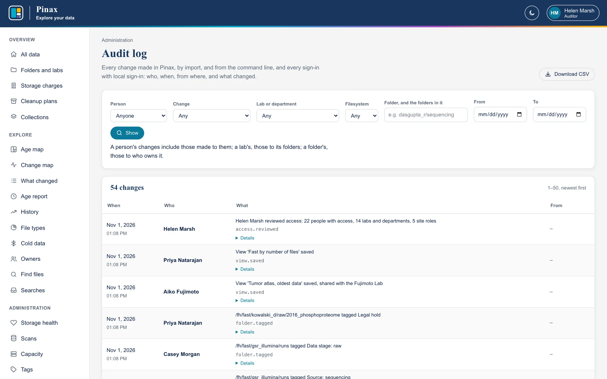
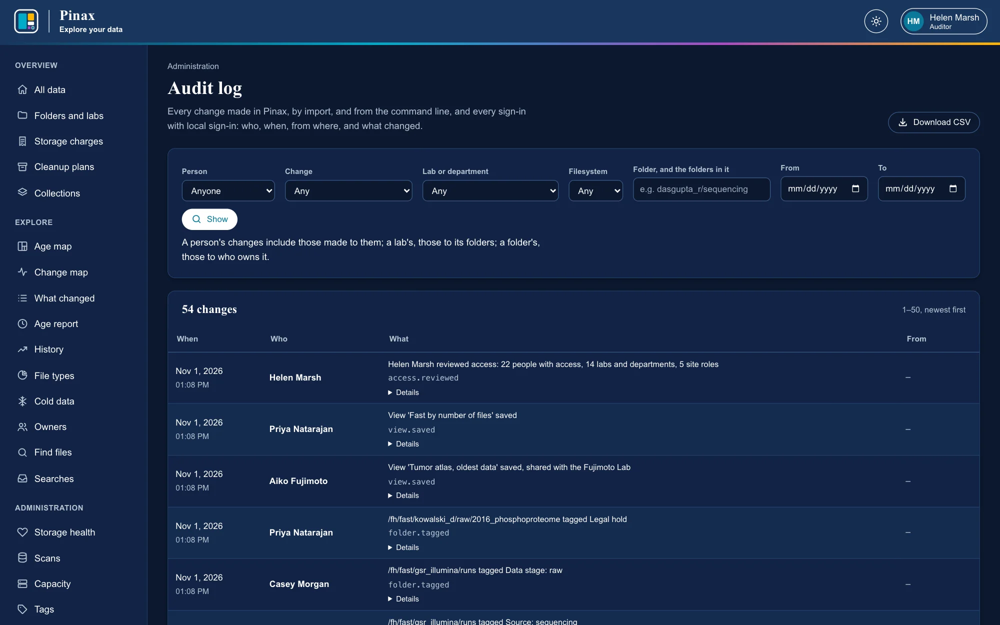
Each event is also written to Pinax's log once its change is committed, and to PINAX_AUDIT_LOG if it is set, for a site's security monitoring (Logs). Changes made before 0.12.0 have no address, except sign-ins. The whole log is the catalog's audit_event table (Monitoring and operations).